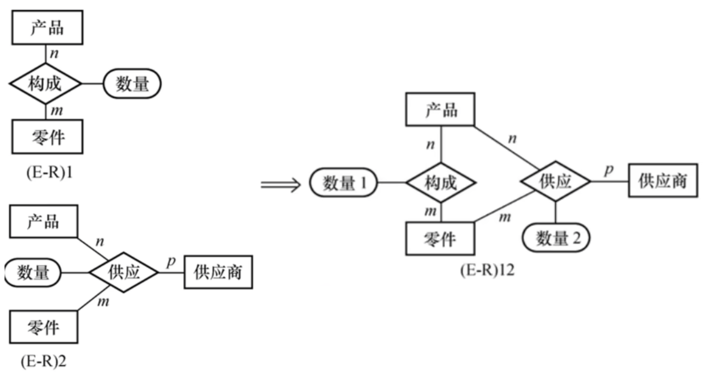

数据库E-R模式设计
数据库E-R模式设计
1 数据库设计概述
1.1何为数据库设计？
数据库设计是指对于一个给定的应用环境，构造最优的数据库模式，建立数据库及其应用系统，使之能够有效地存储数据，满足各种用户的应用需求（信息要求和处理要求）。
数据库是信息系统的核心和基础，它把信息系统中大量的数据按一定的模型组织起来，并提供存储、维护、检索数据的功能，最终使信息系统可以方便、及时、准确地从数据库中获得所需的信息。即数据库的设计目标是：为用户和各种应用系统提供一个信息基础设施和高效率的运行环境，这里的高效率代表的是冗余少、易维护和便于使用。
数据库设计的全流程
数据库设计大致可分为如下几个阶段：
需求分析 → 概念设计 → 逻辑设计 → 物理设计 → 数据库实施 → 运行与维护阶段

设计数据库核心三个步骤
- 把现实世界的实体模型，通过建模转换成信息世界的E-R模型 – 概念结构设计；
- 信息世界的E-R模型，经过模型转化，得到数据库世界的数据模型 – 逻辑结构设计；
- 把数据模型进一步规范化，得到最终的数据库结构模型 – 物理结构设计；
数据库世界的数据模型按数据的组织形式而分为三种类型
- 关系模型（在关系数据库设计中）
- 层次模型
- 网状模型
1.2 必须要明确的几个概念
本文主要讨论分析的数据库设计为关系型数据库，在正式开始了解数据库设计阶段之前先来明确几个关系型数据库的重要概念。
- 关系 ：关系型数据库关系的数据结构就是一张二维表，通俗的讲，二维表名称就是关系名。
- 属性 ：二维表中的列称为属性（字段），每个属性都有一个属性名。
- 域 ：二维表中属性的取值范围称为域，每个属性都有一个域。
- 关系模式 ：二维表的结构称为关系模式。设关系名为 R，其属性为 A1，A2，…，An，则关系模式可以表示为：R(A1,A2,…,An)，一个具体的例子：职工（职工号，姓名，性别，部门）。
- 候选码 ：如果一个属性集的值能唯一标识一个关系的元组而又不含多余的属性，则称该属性集为候选码。在一个关系上可以有多个候选码。
- 主属性 ：包含在任一候选码中的属性。
- 非主属性 ：不包含在任一候选码中的属性。
- 主键 ：有时一个关系有多个候选码，可以选择其中一个作为主键。每个关系有且只有一个主键。
- 外键 ：如果关系模式 R 中的属性 K 是其他关系模式的主键，那么 K 在关系模式 R 中称为外键。
2 需求分析
需求分析的主要任务就是要通过详细调查现实世界中要处理的对象，来充分了解明确用户的各种需求，最终确定系统的功能，并且必须充分考虑系统在今后可能的扩充和改变，不能仅仅按当前应用需求来设计数据库。需求分析阶段的最终产物是要有明确的系统需求分析报告，一般会包括数据流图、功能模块图、数据字典等内容，并且它是指导开展数据库设计后续阶段活动的重要依据。
3 概念设计
3.1 现实世界向机器世界的过渡
概念设计是设计形成一个独立于 DBMS 的概念数据模型，用来表述数据与数据之间的联系，它直接面向现实世界，因而很容易被用户所理解，方便用于数据库设计者与用户的交流。该阶段先设计与用户具体应用相关的数据结构——用户视图，然后再不断对视图进行集成修改，最终得到一个能正确、完整地反应该单位数据及联系并满足各种处理要求的数据模型，之后再把概念模型转换成具体机器上 DBMS 支持的数据模型。
概念设计的阶段的主要描述工具就是 E-R 模型（Entity-Relationship Model）。
3.2 E-R Model
E-R模型（Entity-Relationship Model）是一种用于数据库设计的概念模型。它提供了一种描述现实世界中的数据组织和关联的图形化方法，用于表示 实体、属性 和 联系 之间的关系，简而言之，将现实世界的 实体模型通过建模转换为信息世界的概念模型，这个概念模型就是E-R模型。
3.2.1 为什么要引入E-R图？
使用E-R模型有以下几个主要原因：
- 数据建模：E-R模型提供了一种直观且易于理解的方法来建模现实世界中的数据。通过将实体、属性和关系抽象成图形化符号，可以更好地捕捉和表示数据之间的关系和结构。
- 数据可视化：E-R模型允许将数据的组织和关联可视化。通过图形表示，可以清晰地展示实体之间的关系、属性的特征以及它们之间的连接方式。
- 数据完整性：E-R模型有助于确保数据的完整性。通过定义实体之间的关系和约束条件，可以确保数据在插入、更新和删除时保持一致性和正确性。
- 查询优化：E-R模型可以帮助优化数据库查询。通过了解实体之间的关系，可以设计出更有效的查询和连接方式，提高查询性能和响应时间。E-R模型还可以指导索引的创建，以支持常见的查询操作。
总的来说，E-R模型提供了一种直观和规范的方法来描述和设计数据库。它有助于提高数据库设计的质量、数据的完整性和查询的性能，从而提升整个数据库系统的效率和可靠性。
3.2.2 E-R图的构成
实体（Entity）：实体表示现实世界中的一个独立对象，可以是人、物、地点、概念等。在E-R图中，实体用矩形框表示，框内写上实体的名称。
属性（Attribute）：属性是描述实体特征的信息。每个实体可以有多个属性，例如一个人实体可以有姓名、年龄、性别等属性。属性以椭圆形状表示，并与相应的实体相连。其中能够唯一标识实体的属性称为主键。
实体和属性的划分原则：为了简化E-R图的的处理，现实世界中能作为属性的尽量作为属性值。属性如果还有对应的属性进行描述，那就可以将该属性上升为实体。

这张图描述了一个教师的实体对象以及它拥有的姓名、性别等属性，是对现实世界信息的直观描述。
某些属性还可以划分具有独立意义的子属性，那这类属性就称为复合属性。例如人的姓名可划分为“姓”和“名”；地址属性可以划分为邮政编码、省名、市名、区名和街道这些子属性，而街道又可划分为街道名和门牌号，其层次结构如下：

复合属性的用途有两个：
- 准确模拟现实世界的复合信息结构；
- 当用户需要把复合属性作为一个整体使用又需要单独使用各子属性时，属性的复合结构就显得十分重要。
例如发邮件时称呼对方可能只需要复合属性“姓名”中的“姓”就足够了。
属性按照取值的个数还可以分为单值属性和多值属性。单值属性是指此属性对于同一个实体只能取一个值，大多数的属性都属于单值属性，例如同一个人只能具有一个年龄和一种性别。但是在某些情况下，实体的属性可能取多个值，这时候的属性就称为多值属性，例如人的联系方式信息就是一个多值的，有的人有 1 个电话，有的人有 2 个或者 3 个等等，或者可以分为移动电话联系方式、固定电话联系方式和邮件联系方式等。
注意：多值属性的描述与单值属性不一致，它采用双线椭圆表示，并且在实际开发过程中，如果有多值属性出现，一般要将其另归为实体或联系。
实体属性之间可能具有某种联系，例如人的年龄属性和出生日期有一种相互依赖关系，根据出生日期可以推导出人的年龄，我们就称年龄为导出属性或派生属性。导出属性不仅可以从另外的属性中导出，也可以从相关的实体导出。例如一个公司实体的员工数量属性的值可以通过累计该公司所有员工数得到。
还有一种属性称为可选属性，即并不是所有的属性都必须有值，有些属性的可以没有值，这就是可选属性，在椭圆的文字后用“（O）”来表示。
关系（Relationship）：关系表示实体之间的相互作用或联系。关系可以是一对一、一对多或多对多的。在E-R图中，关系用菱形表示，并与相关的实体相连。关系还可以具有属性，用于描述与关系相关的信息。
主键（Primary Key）：用于唯一标识实体的属性，通常在实体框内用下划线或加粗表示。主键属性的值在整个实体集合中必须是唯一的，用于区分不同的实体。
3.2.3 实体间的联系
（1）联系的种类
现实世界中，事物内部或事物之间总是有联系的，联系反映了实体内部或实体之间的关系。
联系的度数指的是一个联系所涉及的实体数。比如：单实体联系、两实体联系和多实体联系。
比较常见的为两实体联系，两个实体之间可能存在以下联系：
- 一对一联系（1 : 1），例如部门和负责人之间的联系，一个部门有一个负责人，一个负责人负责一个部门；
- 一对多联系（1 : n），例如部门和员工之间的联系，一个部门有多个员工，而每个员工只属于一个部门；
- 多对多联系（m : n），例如项目和员工之间的联系，一个项目可以需要多个员工参加，而一个员工也可以参加多个项目。
联系一般使用菱形来进行描述，上面的这几种联系可用如下 E-R 图来表示。

在E-R图中，关系也可以具有与之相关的属性，用于描述与该关系相关的信息。这些属性可以提供更详细的关系描述，以补充关系本身无法完全表达的信息。 比如职工与部门的工作关系，这个关系可以具有属性，如工作时间、工作性质。通过关系的属性以便于更好的描述职工在部门中的工作情况。
我们通过一个例子来加深印象：
让我们来设计一个简单的 E-R 图来表示学生和课程之间的关系。假设我们有两个实体：学生（Student）和课程（Course）。一个学生可以注册多门课程，而一门课程可以有多名学生。
设计过程如下：
- 确定实体（Entities）：
- 学生（Student）：属性包括学生ID（Student ID）、姓名（Name）、年级（Grade）等。
- 课程（Course）：属性包括课程ID（Course ID）、课程名称（Course Name）、学分（Credit）等。
- 确定关系（Relationship）：
- 注册（Enrollment）：学生和课程之间的关系。这是一个多对多的关系，因为一个学生可以注册多门课程，而一门课程可以有多名学生。此关系可以具有属性，如选课日期（Enrollment Date）。
- 确定主键（Primary Key）：
- 学生实体的主键为学生ID（Student ID）。
- 课程实体的主键为课程ID（Course ID）。
E-R图如下：
E-R图进阶
4.1弱实体
想象一下，在数据库中，实体就像是人或物体，而属性就像是这些人或物体的特征。通常情况下，一个实体具有自己的标识，例如一个人有独特的身份证号码，一个产品有独特的产品编号。
然而，有时候存在一种情况，某个实体的标识依赖于与其相关联的另一个实体。这时，我们称这个实体为弱实体。弱实体没有自己的唯一标识，它的标识需要依赖于与其相关联的另一个实体（强实体）。
在 E-R 图中，弱实体通常用双矩形框表示。
我们来举一个例子：
订单小票和订单项（也就是小票上面的每个商品多少钱的那一项）之间的E-R图。
订单项并不是一个单独存在的实体，而是基于订单小票才会产生的一个实体，所以我们把它划分为弱实体。
4.2部分键
在 E-R 图中，弱实体通常没有自己的唯一标识，因此需要使用弱实体的部分键来唯一标识不同的实例。弱实体的部分键是通过指定其中一个属性与父实体的键结合从而形成相应弱实体的键，弱实体的这个属性称为弱实体的部分键。部分键用虚线标识。
我们来举一个例子：
还是订单小票和订单项（也就是小票上面的每个商品多少钱的那一项）之间的E-R图。
这是我们上面的图片，我们基于这个进行一个拓展，把订单项这个弱实体中的部分键标识出来。
我们只有通过商品ID与订单ID结合才能找到某一个订单项。 所以我们可以把商品ID定为部分键。
3.5 E-R 模型的集成
由于局部 E-R 模型反映的只是局部子功能对应的数据视图，且局部 E-R 图之间可能存在不一致之处，还不能作为逻辑设计的依据，此时可以进行 E-R 模型的集成，去掉不一致和重复的地方，最终合并为全局视图。局部 E-R 模型的集成方法有如下两种：
- 多元集成法：一次性将多个局部 E-R 图合并为一个全局 E-R 图；
- 二元集成法：用累加的方式一次集成两个局部 E-R 图。
在实际应用中一般根据系统的复杂程度选择集成的方法，也可以混合使用。无论采用哪种集成方法，每次集成都分为两个阶段：
- 合并：消除局部 E-R 图之间的冲突，生成初步 E-R 图；
- 优化（修改与重构）：消除（或减少）数据冗余，生成全局 E-R 图。
3.5.1 合并
由于各个局部应用所面临的问题不同，且通常是由不同的设计人员进行局部 E-R 图的设计，这就导致各个局部 E-R 图之间必定存在许多不一致的地方，即存在冲突。冲突主要分为三类：属性冲突、命名冲突和结构冲突。
（1）属性冲突
- 属性域冲突，即属性值的类型、取值范围不一致。例如，员工的工号是使用数值型还是字符型。
- 属性取值冲突。例如，学生的成绩有的以百分制计，有的以五分制计。
这类冲突是由于用户在业务上的约定而引起，必须由用户协商解决。
（2）命名冲突
- 同名异义：不同意义的对象在不同的局部应用中具有相同的名字。例如，“单位”既可以表示人员所在部门，也可以作为长度、重量等度量的属性。
- 异名同义：同一意义的对象在不同的局部应用中具有不同的名字。例如学校的“系别”与“学院”实际上是同一实体。
命名冲突可能发生在实体、属性和联系上，常见的为属性冲突，这类冲突通常可以采取行政手段进行协商解决。
（3）结构冲突
同一对象在不同局部应用中具有不同的身份。例如：局部模型A中的某实体在另一局部模型 B 中被设计为属性，这就造成了结构上的冲突。
解决方法：将实体转化为属性或将属性转化为实体，保持结构的统一。
同一对象在不同局部应用中的属性组成不完全相同。例如，对同一类“员工”这一对象，在局部模型 A 中其属性为工号、姓名、性别、年龄4个属性，而在另一局部模型 B 中的属性为工号、姓名、所在部门 3 个属性组成。
解决方法：对实体的属性取其在不同局部应用中的并集，并适当设计好属性的次序。
相同实体之间的联系在不同局部模型中不一致。例如，在局部应用 A 中实体 E1 和 E2 是一对多联系，而在局部应用 B 中却是多对多联系。
解决方法：根据应用语义对实体联系的类型进行综合或调整。
Demo：将E-R1和E-R2进行合并。
将E-R1图中产品-零件的关系平移到E-R2图中，出现“数量”这个属性的命名冲突（同名异义），分别对其进行重命名为“数量1”和“数量2”。
3.5.2 优化
数据冗余 和 联系冗余 是 E-R 模型的主要冗余问题，能被其他数据推导（派生）出来的数据就是冗余数据，能被其他联系推导（派生）出来的联系就是冗余联系。例如，员工实体同时具有“出生年月”和“年龄”属性，“年龄”可以从“出生年月”中推导出来，因此是冗余数据。
冗余的存在容易破坏数据的完整性，造成数据库的维护困难，应予以消除。可以利用多种方法来消除冗余，在关系型数据库中更常用规范化理论来进行分析。
Demo：如图，Q3 = Q1 * Q2，Q4 = ∑Q5，所以Q3和Q4是冗余数据，可以删除。并且由于Q3删除，产品与材料间的m:n的冗余关系也应删除。
在实际开发中，并不一定要严格删除冗余，而应该以业务场景为准，有时适当的冗余可以提升业务代码的性能和数据的可读性，并且可以降低数据库层代码复杂度。
4 逻辑结构设计
逻辑结构设计即将E-R图转换为关系模式。
关系模型
3.1 常用概念
- 关系：可以理解为一张二维表，每个关系都具有一个关系名，也就是通常说的表名（table）；
- 元组：可以理解为二维表中的一行，在数据库中经常被称为记录（record）；
- 属性：可以理解为二维表中的一列，在数据库中经常被称为字段（colum）；
- 域：属性的取值范围，也就是数据库中某一列的取值限制；
- 关键字：一组可以唯一标识元组的属性，数据库中常称为主键，由一个或多个列组成（key）；
- 关系模式：指对关系的描述，其格式为：关系名(属性1,属性2,……,属性N)，在数据库中成为表结构；
3.2 E-R图转关系模式
对于E-R图中每个实体，都应转换为一个关系（table）。
该关系应包括对应实体的全部属性，并应根据关系所表达的语义确定哪个属性或哪几个属性组作为关键字，关键字用下划线标识；
3.2.1 一对一关系
比如：一个班级对应一个正班长，就是1:1联系
则可以创建两个关系（表），一个班级关系（表），一个学生关系（表）；然后我们需要一个联系（关联）来连接这两个关系（表）。有两种方案：
- 联系不单独对应一个关系（表）：联系的属性和一端实体的主键加入另一端实体的关系模式中。
不单独创建一个关系（表）来存储联系，通俗讲就是在一个表中冗余一个字段存另外一个表的主键。
比如：在学生关系（表）中添加一个班级编号属性，用来存储班级关系中的班级编号属性值，或者在班级关系（表）中添加一个学号属性，用来存储学生关系中的学号属性值。 - 联系单独对应一个关系：由联系的属性和两端实体主键构成新关系模式，选择任一端实体的主键作为主键。
单独创建一个关系（表）来存储联系，通俗讲就是创建一个中间表用来存储两个或多个表的主键。
比如：创建一个联系关系（表）来存储班级编号属性和学号属性，并选择一个主键（班级编号或学号）作为联系关系的主键。
3.2.2 一對多关系
班级关系和学生关系之间的联系是1:n。
同样地也有两种关系模式:
- 联系不单独对应一个关系：将联系的属性和
1端的主键加入n端的实体对应的关系模式中。
在这种1:n的关系模式中，一般都是将1端的主键加入n端关系中，即在学生关系（表）中增加一个班级属性，存储对应的班级属性值。 - 联系单独对应一个关系：由联系的属性和两端实体主键构成新关系模式，
n端的主键作为该关系模式的主键。
单独创建一个联系关系（表）来存储班级编号属性和学号属性，并选择n端的主键（学号）作为联系关系的主键。
多对多关系
学生关系和课程关系之间的联系是m:n
这种m:n的关系只有一种关系模式：
- 联系单独对应一个关系：由联系的属性和参与联系的各个实体的主键属性构成新关系模式，该关系模式的主键由各实体的主键共同组成。
单独创建一个联系关系（表）来存储课程号属性和学号属性和成绩属性，联系关系的主键是课程号和学号组成的联合主键。
逻辑结构设计Demos
Demo1：将教学管理ER图转换为关系模式
(1)把三个实体类型转换成三个模式：
①系（系编号，系名，电话）
②教师（教工号，姓名，性别，职称）
③课程（课程号，课程名，学分）
(2)对于1:1联系“主管”，可以在“系”模式中加入教工号（教工号为外键）。对于1:N联系“聘任”，可以在“教师”模式中加入系编号（系编号为外键）。对于1:N联系“开设”，可以在“课程”模式中加入系编号（系编号为外键）。
- ①系（系编号，系名，电话，主管人的教工号）
- ②教师（教工号，姓名，性别，职称，系编号）
- ③课程（课程号，课程名，学分，系编号）
(3)第三步：对于M:N联系“任教”，则生成一个新的关系模式：
①任教（教工号，课程号，教材）
(4)这样，转换成的四个关系模式如下：
①系（系编号，系名，电话，主管人的教工号）
②教师（教工号，姓名，性别，职称，系编号）
③课程（课程号，课程名，学分，系编号）
④任教（教工号，课程号，教材）
Demo2：一元联系类型ER图结构转换为关系模式
(1)运动员名次之间存在着1:1联系
①运动员（编号，姓名，性别，名次，上一名次编号）
(2)职工之间存在上下级联系，即1:N联系
①职工（工号，姓名，年龄，性别，经理工号）
(3)工厂的零件之间存在着组合关系（M:N联系）
①零件（零件号，零件名，规格）
②组成（零件号，子零件号，数量）
Demo3：三元联系的ER图结构转换为关系模式
①仓库（仓库号，仓库名，地址）
②商店（商店号，商店名）
③商品（商品号，商品名）
④进货（商店号，商品号，仓库号，日期，数量）
5 数据库设计规范化
数据库三大范式包含：1、第一范式(1NF)；2、第二范式(2NF)；3、第三范式(3NF)。其中，第一范式(1NF)的要求是属性不可分割;第二范式(2NF)的要求是满足第一范式，且不存在部分依赖；第三范式(3NF)的要求是满足第二范式，且不存在传递依赖。
明确一点：数据库设计时不是说遵循的范式等级越好就越好，范式越好就越牺牲数据库的性能，应该是实际业务场景为准。
1、第一范式(1NF)
所谓第一范式（1NF）是指在关系模型中，对于添加的一个规范要求，所有的域都应该是原子性的，即数据库表的每一列都是不可分割的原子数据项，而不能是集合，数组，记录等非原子数据项。即实体中的某个属性有多个值时，必须拆分为不同的属性。在符合第一范式（1NF）表中的每个域值只能是实体的一个属性或一个属性的一部分。简而言之，第一范式就是无重复的域。
在任何一个关系数据库中，第一范式（1NF）是对关系模式的设计基本要求，一般设计中都必须满足第一范式（1NF）。不过有些关系模型中突破了1NF的限制，这种称为非1NF的关系模型。换句话说，是否必须满足1NF的最低要求，主要依赖于所使用的关系模型。
特点：属性不可分割，即每个属性都是不可分割的原子项。(实体的属性即表中的列)
Demo如下图中的Address属性就不满足第一范式，可以将Address拆分为Country和Address属性。
2、第二范式(2NF)
在1NF的基础上，非码属性必须完全依赖于候选码（在1NF基础上消除非主属性对主码的部分函数依赖）。
能够唯一表示实体的属性集称为码，主码即主键。
第二范式（2NF）是在第一范式（1NF）的基础上建立起来的，即满足第二范式（2NF）必须先满足第一范式（1NF）。第二范式（2NF）要求实体的属性完全依赖于主关键字。所谓完全依赖是指不能存在仅依赖主关键字一部分的属性，如果存在，那么这个属性和主关键字的这一部分应该分离出来形成一个新的实体，新实体与原实体之间是一对多的关系。为实现区分通常需要为表加上一个列，以存储各个实例的唯一标识。简而言之，第二范式就是在第一范式的基础上属性完全依赖于主键。
教材定义：在满足第一范式的条件下，每一个非主属性完全函数依赖于任何一个候选码。
特点：
- 满足第一范式；
- 第二范式需要确保数据表中的每一列都和主键相关，而不能只与主键的某一部分相关（主要针对联合主键而言），每张表只描述一件事情；
- 消除部分依赖，要求表中的每一列都完全依赖于主键（针对于组合主键），也就是不会出现某一列只和部分主键相关。
Demo1：“学分”字段完全依赖于“课程名称”字段，而不是依赖于主键“学号”字段，所以不符合第二范式，将“学分”字段删除之后就符合了。
Demo2：每个表只描述一件事。
原始订单表中的“产品名称”和“规格”是依赖“产品编号”字段的，不符合第二范式，对其进行拆分为订单表和产品表，订单表中只有订单相关信息，产品表中只有产品相关信息，让每一个表只描述一件事情。
3、第三范式(3NF)
在2NF基础上，任何非主属性不依赖于其它非主属性（在2NF基础上消除传递依赖）。
第三范式（3NF）是第二范式（2NF）的一个子集，即满足第三范式（3NF）必须满足第二范式（2NF）。第三范式（3NF）要求一个关系中不包含已在其它关系已包含的非主关键字信息。例如，存在一个部门信息表，其中每个部门有部门编号（dept_id）、部门名称、部门简介等信息。那么在员工信息表中列出部门编号后就不能再将部门名称、部门简介等与部门有关的信息再加入员工信息表中。如果不存在部门信息表，则根据第三范式（3NF）也应该构建它，否则就会有大量的数据冗余。简而言之，第三范式就是任意属性不依赖于其它非主属性，也就是在满足2NF的基础上，任何非主属性不得传递依赖于主属性。
教材定义：在满足第二范式的条件下，每一个非主属性既不依赖传递于码，也不部分依赖于码。
特点：
- 前提：满足第一范式和第二范式；
- 第三范式需要确保数据表中的每一列数据表和主键直接相关，而不能间接相关；
- 消除传递依赖，要求一张表中的每一列都和主键是直接依赖的，不是间接依赖，即任何两个非主键字段数值之间不存在函数依赖关系。
Demo：订单表中的“总金额字段” = “单价” * “数量”，不符合第三范式，去掉“总金额”字段才符合。
PS：其实这个订单表不符合第二范式，“单价”字段是依赖于“产品编号”字段，而不是主键“订单编号”。
巴斯-科德范式（BCNF）
3NF基础上，任何主属性不能对主键子集依赖（在3NF基础上消除主属性对主码子集的依赖）。巴斯-科德范式（BCNF）是第三范式（3NF）的一个子集，即满足巴斯-科德范式（BCNF）必须满足第三范式（3NF）。通常情况下，巴斯-科德范式被认为没有新的设计规范加入，只是对第二范式与第三范式中设计规范要求更强，因而被认为是修正第三范式，也就是说，它事实上是对第三范式的修正，使数据库冗余度更小。这也是BCNF不被称为第四范式的原因。某些书上，根据范式要求的递增性将其称之为第四范式是不规范，也是更让人不容易理解的地方。而真正的第四范式，则是在设计规范中添加了对多值及依赖的要求。
参考文档：
 微信
微信